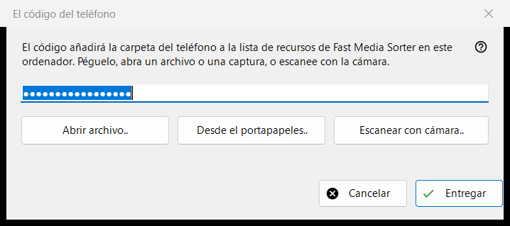
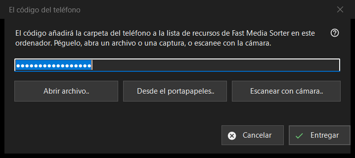

El código del teléfono
Para qué sirve
Recibe un código de conexión generado por la aplicación del teléfono y se lo entrega a Fast Media Sorter, que añade la carpeta del teléfono a su lista de recursos en este equipo. Se abre desde el botón «Código de teléfono..» de la ventana principal de Share Manager.


En este orden
- Lleva el código a la ventana de una de cuatro maneras: escríbelo o pégalo en el cuadro, pulsa «Abrir archivo..», pulsa «Desde el portapapeles..» o pulsa «Escanear con cámara..».
- Pulsa «Entregar».
- Confirma la adición de la carpeta en la ventana de Fast Media Sorter que aparece.
Los elementos
Código de conexión
Un cuadro de una sola línea que muestra puntos en lugar de caracteres, porque el código es un secreto; nunca se escribe en un registro. Si pulsas «Entregar» con el cuadro vacío, se te pide que escribas el código, lo pegues o abras un archivo o una captura de pantalla.
Archivo, portapapeles y cámara
«Abrir archivo..» lee archivos .fmscfg, .json y .txt e imágenes QR (.png, .jpg, .jpeg, .bmp, .webp); también se puede arrastrar un archivo sobre la ventana. «Desde el portapapeles..» lee el código del portapapeles. «Escanear con cámara..» abre la ventana de la cámara, y el texto escaneado se trata como si se hubiera pegado.
Entregar
El código se comprueba y después se envía al Fast Media Sorter en ejecución, cuyo propio cuadro de importación sigue haciendo sus preguntas habituales. Si todo va bien, el estado dice «El código se entregó: confirme la adición en la ventana de Fast Media Sorter.» y esta ventana se cierra. Si Fast Media Sorter no se encuentra, es una versión anterior o no responde, el código se coloca en el portapapeles con marcadores de privacidad y la línea de estado indica que lo pegues con «Importar del portapapeles» en el panel de recursos.
Mensajes de la línea de estado
Un documento que no es un código de conexión ni un archivo de ajustes de recursos se notifica como ilegible. Un archivo creado por una versión más reciente pide que actualices Fast Media Sorter. Si otro programa tiene ocupado el portapapeles, el estado lo indica.
Ajustes del gestor · Ajustes de uso compartido SFTP · Ajustes del servidor de intercambio